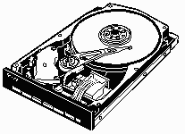

The floppy drive interface can control two drives and the interface cable has two sets of control signals - one for each drive. Floppy Disk Drives have drive select jumpers on them that configure the drives as either first or second drive. In a PC computer the first drive is called A: drive and the second drive is called B: drive. The original way the drives were meant to be configured was to select one drive as the first drive and the other as the second drive, via the jumpers on the drive. Most PC Computers use a strange standard interface cable originally used by IBM, where each drive is selected as the second drive and a twist in the cable transposes the control signal between one drive and the next. This standard 34 wire Floppy Disk Drive Interface cable used in most PC computers has Drive A:, as the drive at the end of the cable, and drive B: further in, before the twist. Most cables suppled with modern hardware have four connectors on the floppy drive end of the cable with a 34 pin edge connector and a 34 pin header connector for each drive. It is easy to re-assign the A: and B: drives in modern PC computers.
The 5.25 inch Floppy Disk Drives require a +12 volt and a +5 volt supply. Most 3.5 inch Floppy Disk Drives only require a +5 volt supply.
Over the years as Floppy Disk technology has improved, DOS has followed this evolution and quite a few disk formats have resulted. DOS and Windows operating systems can recognise a Floppy Disks format and will read from, and write to, almost any disk format. The one exception involves the 720K, 5.25 inch format. This is not an official DOS format and may not be recognised by DOS, and Windows.
| SIZE (in inches) |
TRACKS (per side) |
SECTORS (per track) |
SIDES | CAPACITY (nominal) |
|---|---|---|---|---|
| 5.25 | 40 | 8 | 1 | 160K |
| 5.25 | 40 | 8 | 2 | 320K |
| 5.25 | 40 | 9 | 1 | 180K |
| 5.25 | 40 | 9 | 2 | 360K |
| 5.25 | 80 | 9 | 2 | 720K (note 2) |
| 5.25 | 80 | 15 | 2 | 1.2Meg |
| 3.5 | 80 | 9 | 2 | 720K |
| 3.5 | 80 | 18 | 2 | 1.44Meg |
| 3.5 | 80 | 21 | 2 | 1.72Meg (DMF format) |
| 3.5 | 80 | 36 | 2 | 2.88Meg |
The sectors on a disk must be read and rewritten by different disk drives, usually with slight variations in the speed of rotation, and so Inter Sector Gaps of unused disk space are needed between the sectors to stop the data from one sector overlapping into the next.
In addition to the gaps between the sectors each sector must be supported by a sector Identifier called the Sector ID field. The Sector ID field is written only once when the disk is formatted and is never written again, only the 512 bytes of data in the data field are written to, in normal operation.
The structure of a single sector is as follows. (all numbers are in hexadecimal)
In addition to the overheads required for each sector, the start of each track also has it's own identification field consisting of ,
| FORMAT | CLUSTER SIZE | FAT TYPE | FAT | DIRECTORY |
|---|---|---|---|---|
| 160K | 1 = 512 byte | 12 bit | 1 sector | 4 sectors = 64 entries |
| 180K | 1 = 512 byte | 12 bit | 2 sector | 4 sectors = 64 entries |
| 320K | 2 = 1024 byte | 12 bit | 1 sector | 7 sectors = 112 entries |
| 360K | 2 = 1024 byte | 12 bit | 2 sector | 7 sectors = 112 entries |
| 720K | 2 = 1024 byte | 12 bit | 3 sector | 7 sectors = 112 entries |
| 1.2Meg | 1 = 512 byte | 12 bit | 7 sector | 14 sectors = 224 entries |
| 1.44Meg | 1 = 512 byte | 12 bit | 9 sector | 14 sectors = 224 entries |
| 2.88Meg | 2 = 1024 byte | 12 bit | 9 sector | 15 sectors = 240 entries |
Two copies of the FAT are stored on the disk just in case one gets damaged.
| 1 sector (the very first sector on Track Zero, Side Zero) | |
| 4 sectors (the next four sectors on Track Zero, Side zero) Two sectors for each copy of the FAT |
|
| 7 sectors (the next seven sectors on Track Zero, Side zero) |
This leaves this disk format with 708 sectors available, and as the cluster size is two sectors this gives a total of 354 clusters in the Data Space to store files in. The cluster size of two sectors, 1024 bytes, means the smallest amount of disk space that can be allocated to a file is 1024 bytes, even if that file is only ten bytes long.
When the computer is booted the Boot Strap Loader in the BIOS ROM, loads the Boot Sector from the Boot disk into the memory, and then the Boot Strap Loader from the Boot Sector, loads the Operating System. NOTE: Both Bootable and non-bootable disks have identical Boot Sectors. When you try to boot a PC Computer from a non system disk, the error message is coming from the simple Boot Strap Loader, loaded into RAM, from the Boot Sector. When it cant find the DOS System Files, it gives an error message.
The old single sided 40 track disk formats had a Cluster size of one sector (512 bytes), double sided 40 track formats used two sectors per Cluster (1024 bytes) and all High Density Floppy Disk formats use Cluster sizes of one sector (512 bytes). Hard Disk Drives can have Clusters of up to 64 sectors per Cluster. What this means is that the smallest amount of disk space that can be allocated to a file when it is written to a disk is the size of the cluster. This size is number of sectors per cluster times 512 bytes per sector.
You can see the Cluster size of a Disk Drive by using the CHKDSK command from the DOS prompt, either under DOS 6.xx or under Windows 95 DOS. CHKDSK reports on the bytes in each allocation unit, this is talking about the Cluster size.
When a very small file is saved onto a Disk Drive, the amount of disk space taken up by that file is the size of the Cluster. The rest of that Cluster cannot be allocated to another file and is wasted space on the disk. For example, if we save a file that is only 10 bytes long on a 1.44Meg Floppy Disk, the rest of the 512 byte Cluster will be wasted. This is a BIG problem when we look at high capacity Hard Disk Drives where the cluster size can be as high as 64 Sectors, 32,758 bytes.
The File Allocation table takes three forms, the FAT can be constructed of either 12 bit, 16 bit or 32 bit numbers. The 12 bit FAT is made up of one and a half bytes per entry, and is only used on Floppy Disks. Until the recent introduction of OSR2 release of Windows 95 with the option of using a 32 bit FAT, Hard Disk Drive Partitions were limited, by the 16 bit FAT, to a maximum size of 2.1 GByte. At present the 32 bit FAT is only available when you format a Hard Disk Drive with the OSR2 release of windows 95, it cannot be put on a systems that is already formatted with the older Windows 95. This problem will be overcome by Windows 98 when it is released, it will have provision to convert Hard Disk Drives from 16 bit FAT to 32 bit FAT.
| Use | Number of bytes |
|---|---|
| File Name | 8 (this is why the file name be a max. of 8 characters) |
| File Name Extension | 3 (this is why the extension is limited to 3 characters) |
| Attribute Byte | 1 (see table below for how the bis are used) |
| not used by the DOS file system | 10 (Oh what a waste) |
| Time the file was written | 2 |
| Date the file was written | 2 |
| The number of the first Cluster used by that file | 2 |
| The file size | 4 |
The "bits" of the Attribute Byte are used like this
| Bit | Use |
|---|---|
| 0 | File is read-only |
| 1 | File is hidden from view |
| 2 | File is a System file |
| 3 | This directory entry is a Volume Label rather than a file name |
| 4 | This entry is a Subdirectory name rather than a file name |
| 5 | Archive bit - used to control Data Backup |
| 6 | not used |
| 7 | not used |
Volume Label - A Volume Label, a name that can be put on the top of a disk's directory listing, is stored in the Directory like a file name and it can have a maximum of 11 characters.
Subdirectory - When a Subdirectory is created its name is recorded in the directory and one cluster of the data space is allocated to it for storage of file names. When that space is used up by file names additional clusters are allocated to that Subdirectory for it to store file names. The first two entries in a sub-directories structure is occupied by entries that indicate the parent of the sub directory. Look at in a subdirectory and you will see two entries, one with one dot, the other with two dots.
The Directory entry for each file stored on a disk indicates to DOS which Cluster is the first cluster used to store that file and the FAT then forms an Allocation Chain that tells DOS which other Clusters contain the rest of the file. The last cluster used by each file has the hex code FFF in its FAT entry to tell DOS this is the last Cluster. The hex code FFF is used to indicate "end of file".
Important: A cluster is the smallest unit of disk space that can be assigned to a file. When a file is saved on a disk the file system allocates space to the files in "clusters" rather than in sectors. A cluster can be from one sector long (512 bytes) to 64 sectors (32,768 bytes), and this depends on the format of the disk. The use of clusters was an attempt at reducing the size of the File Allocation Table by cutting down the number of units that had to be accounted for by the FAT.
All you have to do to achieve this is to swap the interface plugs over on the back of the drives and then to go into the CMOS setup and reconfigure drive A: and drive B:.
The 100 Meg Zip drive from Iomega is gaining popularity at present and Compaq and 3M have developed LS-120 technology, a 120 Meg device, that will be marketed during 1996, and will be standard fitting to some Compaq models. Until now, the high capacity magnetic devices have been interfaced via a SCSI interface, or via the Parallel port, and have mostly been used as backup and transport devices. Each brand and model has been unique in the technology used.
LS-120 has the advantage of being able to read and write 1.44 Meg high density, 3.5 inch, floppy disks. We will look at these technologies in PC Servicing Two.
 On a Floppy Disk Drive the Boot Record is on Sector One of Side Zero, Track Zero and the other two sections of overheads follow on from there - the first sector of the FAT is on Sector Two of Side Zero, Track Zero.
A Hard Drive Drive has an extra area of overhead. This is the Partition Table and is in the first sector on a hard drive - on Sector One of Side Zero, Track Zero. The Boot Sector on a hard drive is on Sector One of Side One, Track Zero and the rest of the DOS file system overheads follow on from there.
| Back to the opening index | Book four index |